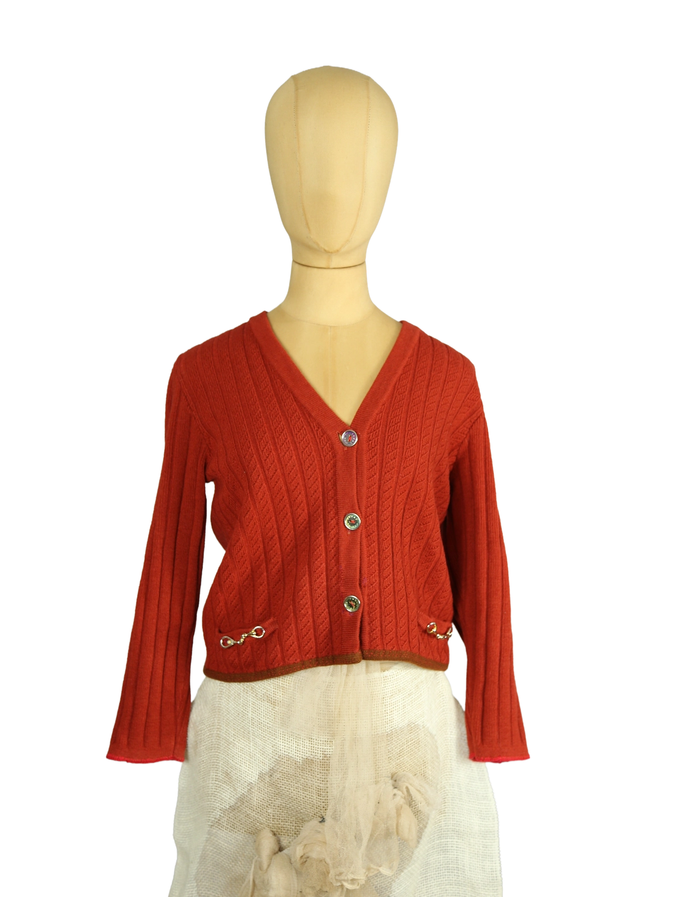

1 / 14Aus dem kuratierten Archiv von Disorder119. Fein gerippter Cardigan von Celine in einem warmen Burgunder-Orange mit strukturierter Strickoberfläche, V-Ausschnitt und schmaler, leicht verkürzter Silhouette. Die vertikalen Rippen und eingearbeiteten Zopfdetails geben dem Stück eine ruhige, präzise Textur. Metallene Logo-Knöpfe und dekorative Haken-Elemente vorne setzen dezente Akzente. Zwei Knöpfe wurden wieder angenäht. Zudem wurden vorne kleinere offene Stellen mit rotem Faden wieder zugenäht; dies ist bei genauer Betrachtung beziehungsweise beim Heranzoomen sichtbar. Ein charakterstarkes Vintage-Stück mit klarer Designer-Präsenz und weiterhin guter Tragbarkeit. Details: Marke: Celine Farbe: Burgunderorange Größe: S Passform: Schmal geschnitten Verschluss: Knopfleiste vorne Material: Nicht angegeben Herstellungsland: Nicht angegeben Fotografie & Passform: Das Kleidungsstück wurde auf unserer Standard-Schneiderpuppe fotografiert, die wir zur konsistenten Darstellung aller Kleidungsstücke verwenden. Maße der Schneiderpuppe: Brustumfang 89 cm Taillenumfang 66 cm Hüftumfang 89 cm Schulterbreite 38 cm Diese Maße dienen ausschließlich der visuellen Einordnung und werden nicht als Artikelmaße bezeichnet. Zustand: Zufriedenstellender Vintage-Zustand mit sichtbaren Tragespuren. Zwei Knöpfe wurden wieder angenäht. Vorne wurden kleinere offene Stellen mit rotem Faden wieder zugenäht; bei genauer Betrachtung sichtbar. Rechtliche Hinweise: Verkauf als gebrauchtes Kleidungsstück. Die Beschreibung erfolgt nach bestem Wissen und Gewissen. Farbnuancen und Oberflächenwirkungen können aufgrund von Lichtverhältnissen bei der Fotografie sowie unterschiedlicher Bildschirmdarstellungen leicht vom Original abweichen. Disorder119 steht für sorgfältig kuratierte Designerstücke mit Fokus auf Authentizität, Qualität und zeitlose Relevanz.
Shop-Kontakt noch nicht eingerichtet: WhatsApp-Nummer oder E-Mail-Adresse fehlen in SHOP_CONFIG (index.html).
Disorder119 · Kuratiertes Archiv für Designer-, Vintage- und Contemporary-Mode. Jedes Stück wird einzeln ausgewählt, fotografiert und beschrieben.